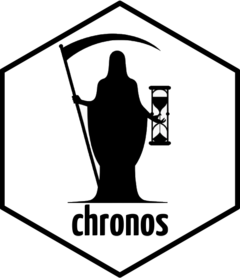

Authors and Citation
Authors
-
Rollie Ma. Contributor, copyright holder.
author of dateparser : <https://github.com/waltzofpearls/dateparser> -
Brandon W. Maister. Contributor, copyright holder.
author of chrono : <https://github.com/chronotope/chrono> -
Dirkjan Ochtman. Contributor, copyright holder.
author of chrono : <https://github.com/chronotope/chrono> -
Seonghoon Kang. Contributor, copyright holder.
author of chrono : <https://github.com/chronotope/chrono> -
Eric Sheppard. Contributor, copyright holder.
author of chrono : <https://github.com/chronotope/chrono> -
Paul Dicker. Contributor, copyright holder.
author of chrono : <https://github.com/chronotope/chrono> -
Authors of vendored Rust crates. Copyright holder.
see inst/AUTHORS file
Citation
Source: DESCRIPTION
Schoch D (2026). timeless: Fast General Purpose Date/Time Converter. R package version 0.2.4.9001, https://github.com/schochastics/timeless.
@Manual{,
title = {timeless: Fast General Purpose Date/Time Converter},
author = {David Schoch},
year = {2026},
note = {R package version 0.2.4.9001},
url = {https://github.com/schochastics/timeless},
}
Additional details
This package includes vendored Rust crate dependencies. The following is a list of those crates and their authors/copyright holders: aho-corasick: Andrew Gallant android-tzdata: RumovZ android_system_properties: Nicolas Silva anyhow: David Tolnay autocfg: Josh Stone bumpalo: Nick Fitzgerald cc: Alex Crichton cfg-if: Alex Crichton chrono: Kang Seonghoon and contributors core-foundation-sys: The Servo Project Developers crossbeam-deque: The Crossbeam Project Developers crossbeam-epoch: The Crossbeam Project Developers crossbeam-utils: The Crossbeam Project Developers dateparser: Rollie Ma either: bluss extendr-api, extendr-ffi, extendr-macros: Andy Thomason, Thomas Down, Mossa Merhi Reimert, Josiah Parry, Claus O. Wilke, Hiroaki Yutani, Ilia A. Kosenkov, Michael Milton iana-time-zone: Andrew Straw, Rene Kijewski, Ryan Lopopolo iana-time-zone-haiku: Rene Kijewski js-sys: The wasm-bindgen Developers lazy_static: Marvin Loebel libc: The Rust Project Developers log: The Rust Project Developers memchr: Andrew Gallant, bluss num-traits: The Rust Project Developers once_cell: Aleksey Kladov paste: David Tolnay proc-macro2: David Tolnay, Alex Crichton quote: David Tolnay rayon: The Rust Project Developers rayon-core: The Rust Project Developers regex, regex-automata, regex-syntax: The Rust Project Developers, Andrew Gallant syn: David Tolnay unicode-ident: David Tolnay wasm-bindgen, wasm-bindgen-backend, wasm-bindgen-macro, wasm-bindgen-macro-support, wasm-bindgen-shared: The wasm-bindgen Developers windows-core, windows-targets: Microsoft windows_aarch64_gnullvm, windows_aarch64_msvc, windows_i686_gnu, windows_i686_msvc, windows_x86_64_gnu, windows_x86_64_gnullvm, windows_x86_64_msvc: Microsoft